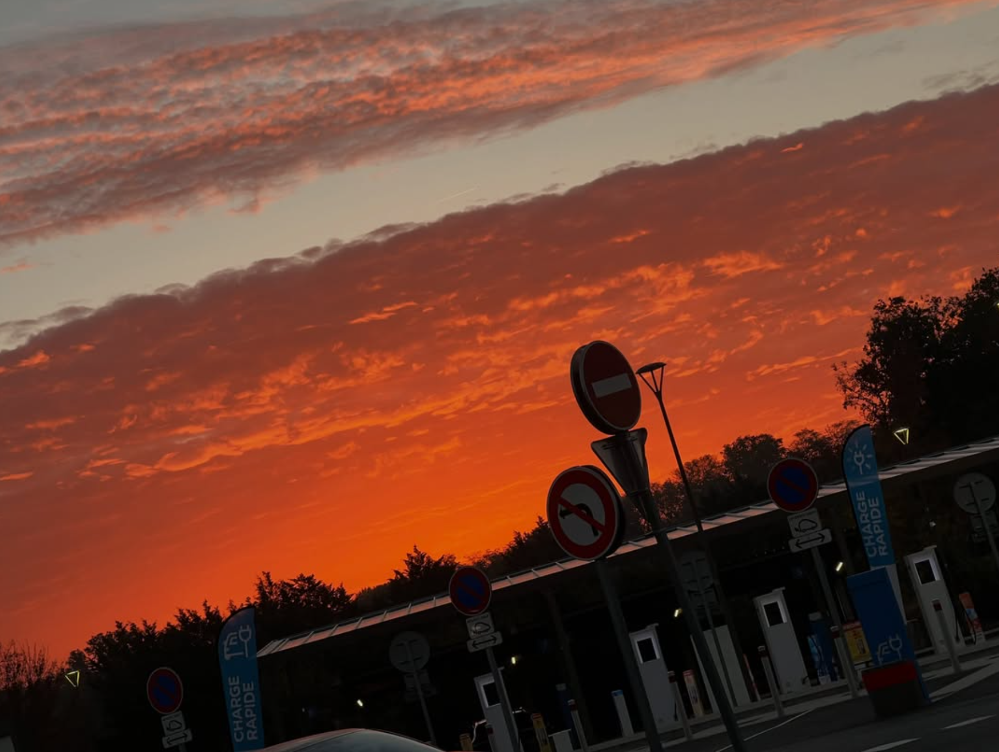

2022 — 2025
Начало пути в Roblox
Первый ноутбук открыл путь к курсам Lua. Через три года — участие с командой в INSPIRE CHALLENGE 2025.

Текущий статус в Steam
—
Steam Community
Обо мне
2022 — 2025
Первый ноутбук открыл путь к курсам Lua. Через три года — участие с командой в INSPIRE CHALLENGE 2025.
2026
Первые программы на Python, изучение алгоритмов защиты данных и создание инструментов тестирования на проникновение.
2026
Камеры наблюдения с датчиком движения: снимок события и уведомление владельцу через собственную программу.
2023 — 2026
Fujifilm FinePix X100 2011 года сначала ждала своего часа, а к августу 2026 стала инструментом для художественной фотографии.
Фотографии
Тут собрал несколько фотографий, которые мне нравятся: поездки, город, дождь и просто случайные моменты.
Динамическая статистика
Всего игр в Steam
0
Загрузка…
Идеальные игры
0
Загрузка…
TikTok
0
Загрузка…
YouTube
0
Загрузка…
Достижения Steam
0
Загрузка…
0
Загрузка…